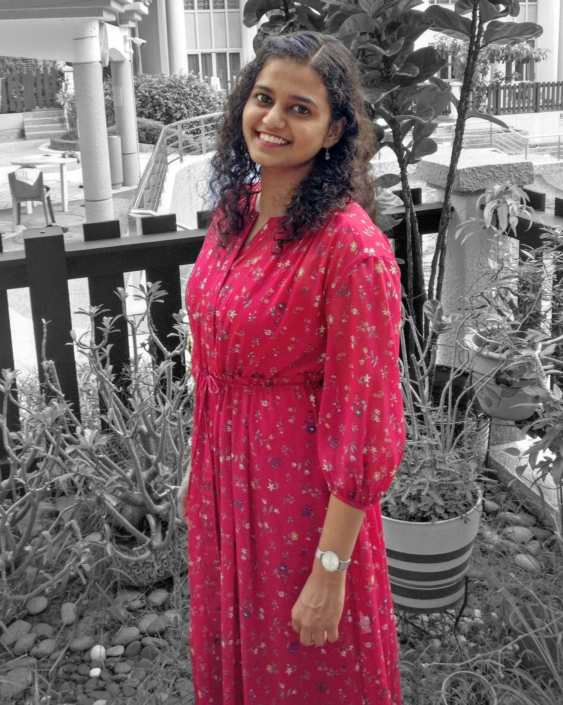

CRAFTING DIGITAL GOODS SINCE — Y:2019

KAVYA
JAHAGIRDAR
ABOUT
I live in Singapore and spend my time between building software products (like Resumey.Pro, StoryCV), raising a curious toddler and writing things that matter. I'm drawn to simplicity, storytelling and purposeful work.
I hold a Bachelor of Engineering from Nanyang Technological University, Singapore. I love building products and scaling them. My past experiences at early stage start-ups and now, co-founding one has helped me add value across different areas - marketing, product development and design.
My enthusiasm lies in ideation and execution, constantly seeking new avenues to create value and express creativity.
PROJECTS

StoryCV

Resumey.Pro

The Brave Rocketeers
EXPERIENCE
Co-founder, Marketing
Resumey.Pro | Singapore
2021 — Present
Working on everything related to marketing and revenue generation. Also ideating new avenues for business growth.
Marketing & Product Manager
Enabling.Win | Singapore
2018 — 2021
Collaborated with the tech team to design, develop, test and implement features for My.Win app. Ideated, organized and marketed 10 webinars for food industry specialists as a marketing channel for the app.
Instrument Reference Data Analyst
J.P. Morgan | Singapore
2016 — 2018
Contributed to projects involving Fixed Income and Equities data for process improvement and strategic change implementation in collaboration with business stakeholders and technology teams.
Trader Assistant, EMTN Private Placement
Commerzbank | Singapore
2014 — 2016
Worked on advisory, pricing and execution of notes for short-term funding for banks and supranational financial institutions based in Asia.
Summer Analyst (eFX- IT)
Credit Suisse | Singapore
May 2013 — Jul 2013
Gained exposure to technology within financial services, enhancing technical understanding of eFX applications.
Intern Analyst
Frost & Sullivan | Singapore
Jul 2012 — Dec 2012
Identified and validated market potentials of research findings in topics ranging from geology to economic liberalization.
At the heart of my work
EDUCATION
Bachelor of Engineering
Nanyang Technological University
2010 — 2014
Majored in Electrical & Electronic Engineering with a minor in Entrepreneurship. Loved (almost) every bit of it!
Chartered Financial Analyst (CFA) Level 1
CFA Institute
Dec 2015
Passed Level 1 examination. Liked it (kind of) but not enough to keep going.